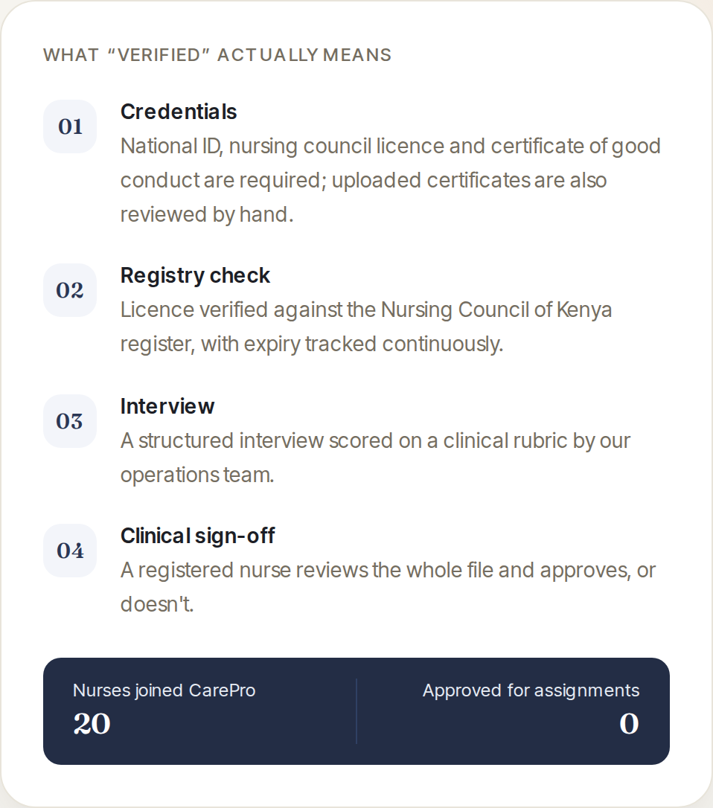

← Register LESNAR AI · system record · Nairobi
Live product · carepro.co.ke
CarePro
Home nursing for families in Nairobi. A family is matched to a nurse, and payment is arranged through the platform.
How a nurse reaches a family
- A nurseSubmits National ID and nursing licence
- OperationsChecks the licence against the Nursing Council register
- OperationsScores a structured interview against a clinical rubric
Responsibility passesOperations → a registered nurse
- A registered nurseReviews the whole file and approves, or does not
- A familyIs matched to an approved nurse
- Source fact
- CarePro publishes these four verification steps on its own surface, in this order, as named steps.
- Interpretation
- The actors and the point where responsibility passes to a registered nurse are our reading of the published sequence.
- Limit
- No blocking rule is published. Nothing states that a match cannot occur before sign-off; the record does not claim one.
Why this one does not stepThe sequence on the home page can be stepped through because both of its crossings are drawn. This one claims a single transfer and leaves its other actor changes unmarked, because the source does not support marking them. Stepping it would invent handoffs this record declines to claim.
What “verified” actually means

- Source
- carepro.co.ke · captured 2026-09-16 · EV-CAREPRO-VERIFY-01
- Shows
- The four verification stages the product names, and its own counters: 20 nurses joined, 0 approved for assignments — the published values on the day of capture.
- Strength
- Published — described by the product, not measured by us.
- Limit
- Zero approved means no nurse had been approved at capture. Nothing here is traffic, revenue, uptime or scale, and no assignment is evidenced.
Not claimedTraffic, revenue, uptime or scale. No regulatory approval, and no certification of the platform. The role and state-machine model are described, not measured.
The public surface is checked from our server, not from your browser, and cached for a few minutes. Reachability tells you a host answered. It is not uptime, health, or evidence that the product works.
Cypher — rules about what a system is allowed to do, and a person who has to approve it before anything happens. Both gate a consequential action behind a named human approval.
Work like this →